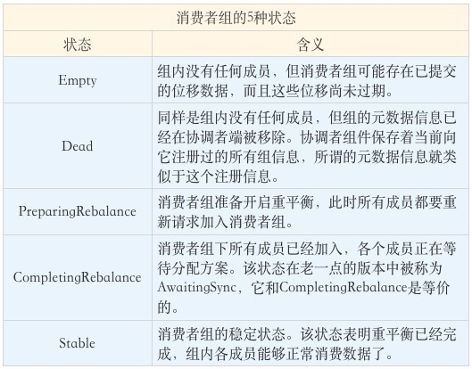
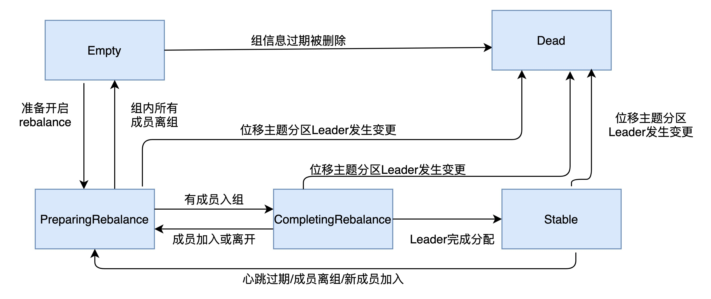
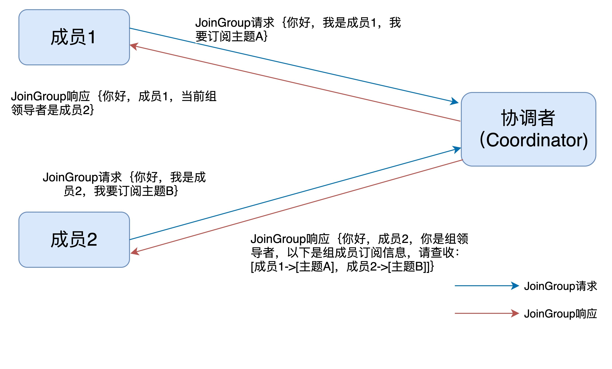
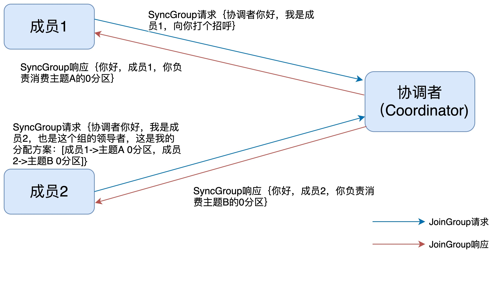
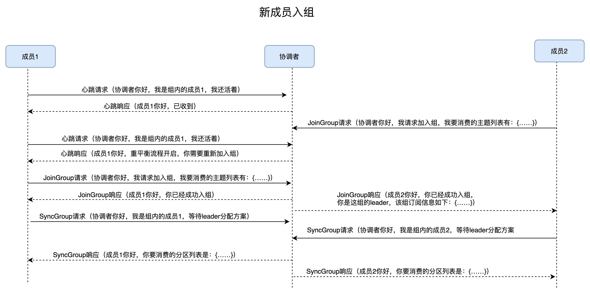
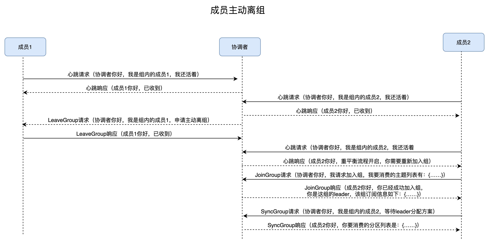
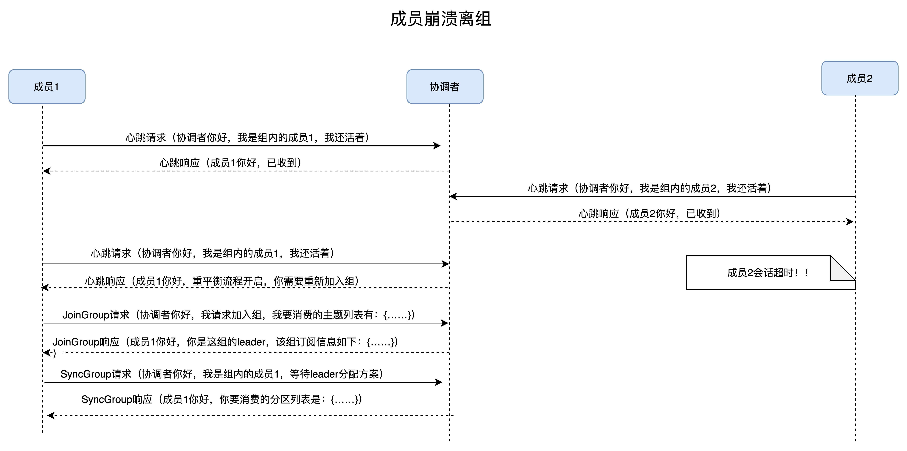
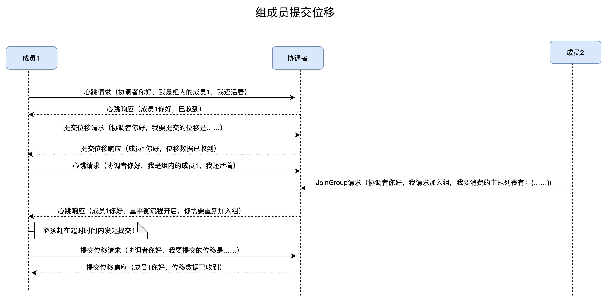
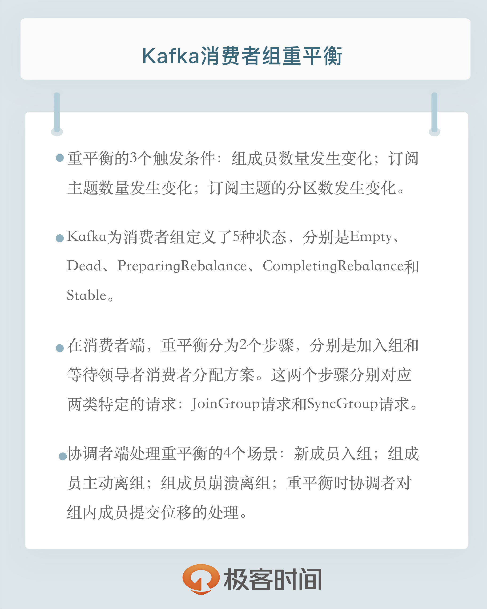

- 00 开篇词 为什么要学习Kafka？.md.html
- 01 消息引擎系统ABC.md.html
- 02 一篇文章带你快速搞定Kafka术语.md.html
- 03 Kafka只是消息引擎系统吗？.md.html
- 04 我应该选择哪种Kafka？.md.html
- 05 聊聊Kafka的版本号.md.html
- 06 Kafka线上集群部署方案怎么做？.md.html
- 07 最最最重要的集群参数配置（上）.md.html
- 08 最最最重要的集群参数配置（下）.md.html
- 09 生产者消息分区机制原理剖析.md.html
- 10 生产者压缩算法面面观.md.html
- 11 无消息丢失配置怎么实现？.md.html
- 12 客户端都有哪些不常见但是很高级的功能？.md.html
- 13 Java生产者是如何管理TCP连接的？.md.html
- 14 幂等生产者和事务生产者是一回事吗？.md.html
- 15 消费者组到底是什么？.md.html
- 16 揭开神秘的“位移主题”面纱.md.html
- 17 消费者组重平衡能避免吗？.md.html
- 18 Kafka中位移提交那些事儿.md.html
- 19 CommitFailedException异常怎么处理？.md.html
- 20 多线程开发消费者实例.md.html
- 21 Java 消费者是如何管理TCP连接的_.md.html
- 22 消费者组消费进度监控都怎么实现？.md.html
- 23 Kafka副本机制详解.md.html
- 24 请求是怎么被处理的？.md.html
- 25 消费者组重平衡全流程解析.md.html
- 26 你一定不能错过的Kafka控制器.md.html
- 27 关于高水位和Leader Epoch的讨论.md.html
- 28 主题管理知多少_.md.html
- 29 Kafka动态配置了解下？.md.html
- 30 怎么重设消费者组位移？.md.html
- 31 常见工具脚本大汇总.md.html
- 32 KafkaAdminClient：Kafka的运维利器.md.html
- 33 Kafka认证机制用哪家？.md.html
- 34 云环境下的授权该怎么做？.md.html
- 35 跨集群备份解决方案MirrorMaker.md.html
- 36 你应该怎么监控Kafka？.md.html
- 37 主流的Kafka监控框架.md.html
- 38 调优Kafka，你做到了吗？.md.html
- 39 从0搭建基于Kafka的企业级实时日志流处理平台.md.html
- 40 Kafka Streams与其他流处理平台的差异在哪里？.md.html
- 41 Kafka Streams DSL开发实例.md.html
- 42 Kafka Streams在金融领域的应用.md.html
- 加餐 搭建开发环境、阅读源码方法、经典学习资料大揭秘.md.html
- 用户故事 黄云：行百里者半九十.md.html
- 结束语 以梦为马，莫负韶华！.md.html
- 捐赠
25 消费者组重平衡全流程解析
你好，我是胡夕。今天我要和你分享的主题是：消费者组重平衡全流程解析。
之前我们聊到过消费者组的重平衡流程，它的作用是让组内所有的消费者实例就消费哪些主题分区达成一致。重平衡需要借助Kafka Broker端的Coordinator组件，在Coordinator的帮助下完成整个消费者组的分区重分配。今天我们就来详细说说这个流程。
先提示一下，我会以Kafka 2.3版本的源代码开启今天的讲述。在分享的过程中，对于旧版本的设计差异，我也会显式地说明。这样，即使你依然在使用比较旧的版本也不打紧，毕竟设计原理大体上是没有变化的。
触发与通知
我们先来简单回顾一下重平衡的3个触发条件：
- 组成员数量发生变化。
- 订阅主题数量发生变化。
- 订阅主题的分区数发生变化。
就我个人的经验来看，在实际生产环境中，因命中第1个条件而引发的重平衡是最常见的。另外，消费者组中的消费者实例依次启动也属于第1种情况，也就是说，每次消费者组启动时，必然会触发重平衡过程。
这部分内容我在专栏第15讲中已经详细介绍过了，就不再赘述了。如果你不记得的话，可以先去复习一下。
今天，我真正想引出的是另一个话题：重平衡过程是如何通知到其他消费者实例的？答案就是，靠消费者端的心跳线程（Heartbeat Thread）。
Kafka Java消费者需要定期地发送心跳请求（Heartbeat Request）到Broker端的协调者，以表明它还存活着。在Kafka 0.10.1.0版本之前，发送心跳请求是在消费者主线程完成的，也就是你写代码调用KafkaConsumer.poll方法的那个线程。
这样做有诸多弊病，最大的问题在于，消息处理逻辑也是在这个线程中完成的。因此，一旦消息处理消耗了过长的时间，心跳请求将无法及时发到协调者那里，导致协调者“错误地”认为该消费者已“死”。自0.10.1.0版本开始，社区引入了一个单独的心跳线程来专门执行心跳请求发送，避免了这个问题。
但这和重平衡又有什么关系呢？其实，重平衡的通知机制正是通过心跳线程来完成的。当协调者决定开启新一轮重平衡后，它会将“REBALANCE_IN_PROGRESS”封装进心跳请求的响应中，发还给消费者实例。当消费者实例发现心跳响应中包含了“REBALANCE_IN_PROGRESS”，就能立马知道重平衡又开始了，这就是重平衡的通知机制。
对了，很多人还搞不清楚消费者端参数heartbeat.interval.ms的真实用途，我来解释一下。从字面上看，它就是设置了心跳的间隔时间，但这个参数的真正作用是控制重平衡通知的频率。如果你想要消费者实例更迅速地得到通知，那么就可以给这个参数设置一个非常小的值，这样消费者就能更快地感知到重平衡已经开启了。
消费者组状态机
重平衡一旦开启，Broker端的协调者组件就要开始忙了，主要涉及到控制消费者组的状态流转。当前，Kafka设计了一套消费者组状态机（State Machine），来帮助协调者完成整个重平衡流程。严格来说，这套状态机属于非常底层的设计，Kafka官网上压根就没有提到过，但你最好还是了解一下，因为它能够帮助你搞懂消费者组的设计原理，比如消费者组的过期位移（Expired Offsets）删除等。
目前，Kafka为消费者组定义了5种状态，它们分别是：Empty、Dead、PreparingRebalance、CompletingRebalance和Stable。那么，这5种状态的含义是什么呢？我们一起来看看下面这张表格。

了解了这些状态的含义之后，我们来看一张图片，它展示了状态机的各个状态流转。

我来解释一下消费者组启动时的状态流转过程。一个消费者组最开始是Empty状态，当重平衡过程开启后，它会被置于PreparingRebalance状态等待成员加入，之后变更到CompletingRebalance状态等待分配方案，最后流转到Stable状态完成重平衡。
当有新成员加入或已有成员退出时，消费者组的状态从Stable直接跳到PreparingRebalance状态，此时，所有现存成员就必须重新申请加入组。当所有成员都退出组后，消费者组状态变更为Empty。Kafka定期自动删除过期位移的条件就是，组要处于Empty状态。因此，如果你的消费者组停掉了很长时间（超过7天），那么Kafka很可能就把该组的位移数据删除了。我相信，你在Kafka的日志中一定经常看到下面这个输出：
Removed ✘✘✘ expired offsets in ✘✘✘ milliseconds.
这就是Kafka在尝试定期删除过期位移。现在你知道了，只有Empty状态下的组，才会执行过期位移删除的操作。
消费者端重平衡流程
有了上面的内容作铺垫，我们就可以开始介绍重平衡流程了。重平衡的完整流程需要消费者端和协调者组件共同参与才能完成。我们先从消费者的视角来审视一下重平衡的流程。
在消费者端，重平衡分为两个步骤：分别是加入组和等待领导者消费者（Leader Consumer）分配方案。这两个步骤分别对应两类特定的请求：JoinGroup请求和SyncGroup请求。
当组内成员加入组时，它会向协调者发送JoinGroup请求。在该请求中，每个成员都要将自己订阅的主题上报，这样协调者就能收集到所有成员的订阅信息。一旦收集了全部成员的JoinGroup请求后，协调者会从这些成员中选择一个担任这个消费者组的领导者。
通常情况下，第一个发送JoinGroup请求的成员自动成为领导者。你一定要注意区分这里的领导者和之前我们介绍的领导者副本，它们不是一个概念。这里的领导者是具体的消费者实例，它既不是副本，也不是协调者。领导者消费者的任务是收集所有成员的订阅信息，然后根据这些信息，制定具体的分区消费分配方案。
选出领导者之后，协调者会把消费者组订阅信息封装进JoinGroup请求的响应体中，然后发给领导者，由领导者统一做出分配方案后，进入到下一步：发送SyncGroup请求。
在这一步中，领导者向协调者发送SyncGroup请求，将刚刚做出的分配方案发给协调者。值得注意的是，其他成员也会向协调者发送SyncGroup请求，只不过请求体中并没有实际的内容。这一步的主要目的是让协调者接收分配方案，然后统一以SyncGroup响应的方式分发给所有成员，这样组内所有成员就都知道自己该消费哪些分区了。
接下来，我用一张图来形象地说明一下JoinGroup请求的处理过程。

就像前面说的，JoinGroup请求的主要作用是将组成员订阅信息发送给领导者消费者，待领导者制定好分配方案后，重平衡流程进入到SyncGroup请求阶段。
下面这张图描述的是SyncGroup请求的处理流程。

SyncGroup请求的主要目的，就是让协调者把领导者制定的分配方案下发给各个组内成员。当所有成员都成功接收到分配方案后，消费者组进入到Stable状态，即开始正常的消费工作。
讲完这里，消费者端的重平衡流程我已经介绍完了。接下来，我们从协调者端来看一下重平衡是怎么执行的。
Broker端重平衡场景剖析
要剖析协调者端处理重平衡的全流程，我们必须要分几个场景来讨论。这几个场景分别是新成员加入组、组成员主动离组、组成员崩溃离组、组成员提交位移。接下来，我们一个一个来讨论。
场景一：新成员入组。
新成员入组是指组处于Stable状态后，有新成员加入。如果是全新启动一个消费者组，Kafka是有一些自己的小优化的，流程上会有些许的不同。我们这里讨论的是，组稳定了之后有新成员加入的情形。
当协调者收到新的JoinGroup请求后，它会通过心跳请求响应的方式通知组内现有的所有成员，强制它们开启新一轮的重平衡。具体的过程和之前的客户端重平衡流程是一样的。现在，我用一张时序图来说明协调者一端是如何处理新成员入组的。

场景二：组成员主动离组。
何谓主动离组？就是指消费者实例所在线程或进程调用close()方法主动通知协调者它要退出。这个场景就涉及到了第三类请求：LeaveGroup请求。协调者收到LeaveGroup请求后，依然会以心跳响应的方式通知其他成员，因此我就不再赘述了，还是直接用一张图来说明。

场景三：组成员崩溃离组。
崩溃离组是指消费者实例出现严重故障，突然宕机导致的离组。它和主动离组是有区别的，因为后者是主动发起的离组，协调者能马上感知并处理。但崩溃离组是被动的，协调者通常需要等待一段时间才能感知到，这段时间一般是由消费者端参数session.timeout.ms控制的。也就是说，Kafka一般不会超过session.timeout.ms就能感知到这个崩溃。当然，后面处理崩溃离组的流程与之前是一样的，我们来看看下面这张图。

场景四：重平衡时协调者对组内成员提交位移的处理。
正常情况下，每个组内成员都会定期汇报位移给协调者。当重平衡开启时，协调者会给予成员一段缓冲时间，要求每个成员必须在这段时间内快速地上报自己的位移信息，然后再开启正常的JoinGroup/SyncGroup请求发送。还是老办法，我们使用一张图来说明。

小结
好了，消费者重平衡流程我已经全部讲完了。虽然全程我都是拿两个成员来举例子，但你可以很容易地扩展到多个成员的消费者组，毕竟它们的原理是相同的。我希望你能多看几遍今天的内容，彻底掌握Kafka的消费者重平衡流程。社区正在对目前的重平衡流程做较大程度的改动，如果你不了解这些基础的设计原理，后面想深入学习这部分内容的话，会十分困难。

开放讨论
在整个重平衡过程中，组内所有消费者实例都会暂停消费，用JVM GC的术语来说就是，重平衡过程是一个stop the world操作。请思考一下，针对这个问题，我们该如何改进这个过程？我们是否能允许部分消费者在重平衡过程中继续消费，以提升消费者端的可用性以及吞吐量？
欢迎写下你的思考和答案，我们一起讨论。如果你觉得有所收获，也欢迎把文章分享给你的朋友。
© 2019 - 2023 Liangliang Lee. Powered by gin and hexo-theme-book.